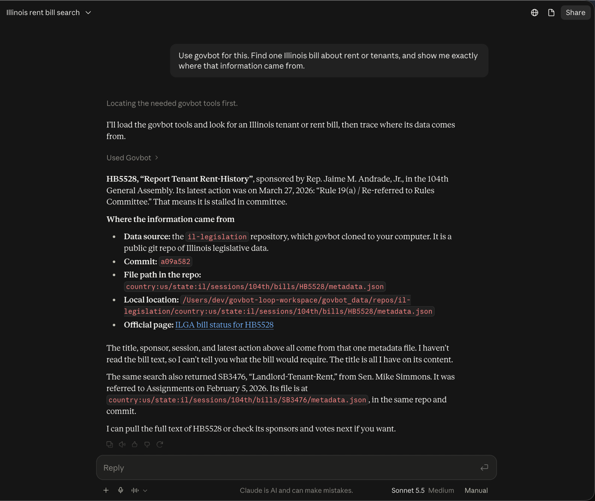
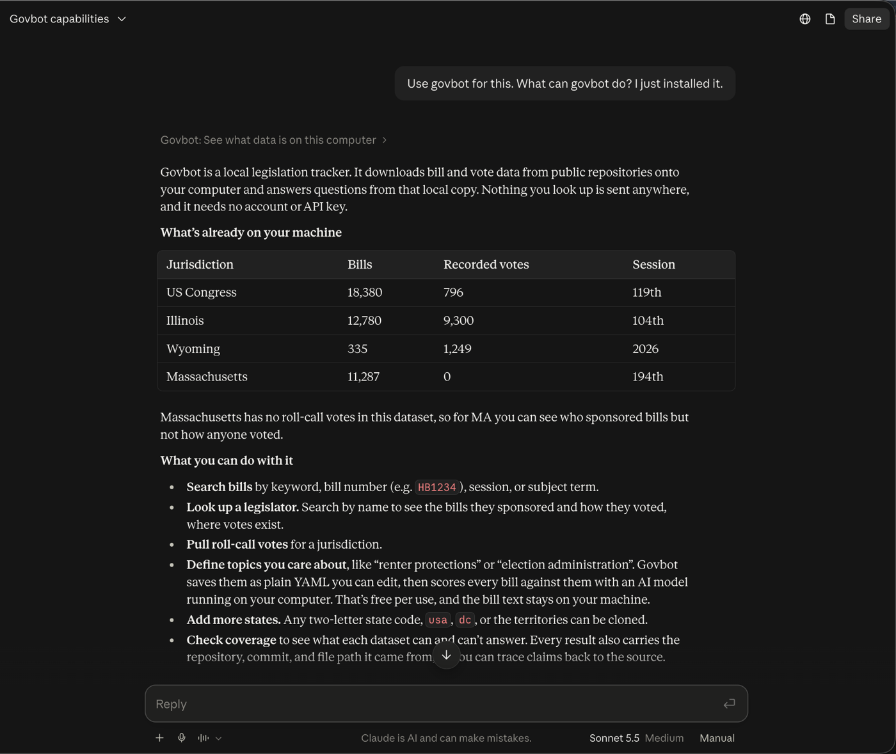

Govbot for Claude
Ask Claude about U.S. legislation (bills, sponsors and how your legislators voted) and get answers that cite the official record, from data kept on your own computer.
Download for Claude Desktopgovbot.mcpb · Mac (Apple silicon)
Before you start
govbot-workspace folder in your home folder. No account, no API key, nothing about you is sent anywhere.Install in five steps
You only do this once. After that, just ask Claude.
Install the govbot tool
Open Terminal (press ⌘ Space, type “Terminal”, press Return), paste this line and press Return. It puts one program in
~/.govbot/binand adds that folder to your Terminal's PATH.sh -c "$(curl -fsSL https://raw.githubusercontent.com/chihacknight/govbot/main/actions/govbot/scripts/install-nightly.sh)"Download the extension
Download govbot.mcpb. It lands in your Downloads folder. It's one file that holds everything Claude needs to talk to govbot.
Open it in Claude Desktop
Double-click
govbot.mcpb. Claude Desktop opens and shows what the extension does. Click Install. (You can also drag the file onto Claude Desktop's Settings → Extensions page.)Check that it's turned on
In Claude Desktop, open Settings (⌘ ,) → Extensions. You should see govbot with its switch turned on. No settings are needed. Your data goes in
govbot-workspaceunless you pick another folder here.Ask your first question
Start a new chat and type “Use govbot: download Illinois, then tell me what data I have.” The first time Claude uses a govbot tool it asks permission. Click Allow, or Always allow so it won't ask again. The first download of a state takes a minute or two.

Things to ask
Starting with “Use govbot” makes sure Claude looks in your data instead of searching the web. Click one to copy it.
Updates and help
How do I update?
Govbot checks for a newer version at most once a day and Claude will tell you when one is out. To update, download govbot.mcpb again and open it, the same as step 3. To update the govbot tool, run the step 1 command again. Your data and topics are kept.
Extensions only update by themselves when they come from Claude's own extension directory; Govbot isn't listed there yet.
Claude says it can't find the govbot tool
Run the step 1 command again, then quit and reopen Claude Desktop. If you installed govbot somewhere else, set its path in Settings → Extensions → govbot.
Claude searched the web instead of using govbot
Start your question with “Use govbot”. Check that the extension is switched on in Settings → Extensions.
Where is my data, and what leaves my computer?
Everything is in govbot-workspace in your home folder: the public legislation you downloaded and a govbot.yml file with the topics you care about, which you can open and edit. Govbot downloads public data from GitHub and checks once a day for updates. It never asks for your address and never sends what you look up anywhere. Claude itself still sees your conversation, as with any chat.
Which states are covered?
All 50 states, Washington D.C., U.S. Congress and the territories. Coverage varies. For example, Massachusetts publishes no roll-call votes, and Govbot tells you when something isn't in the data instead of guessing.
Windows or an Intel Mac?
Not yet. Ready-made builds of the govbot tool exist only for Apple silicon Macs and Linux. Follow issue #19 ↗, or build it from source with Rust (see the developer notes ↗).